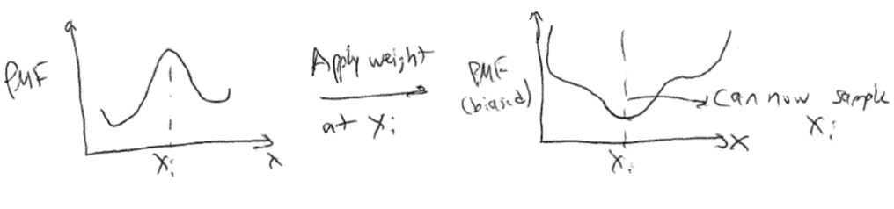
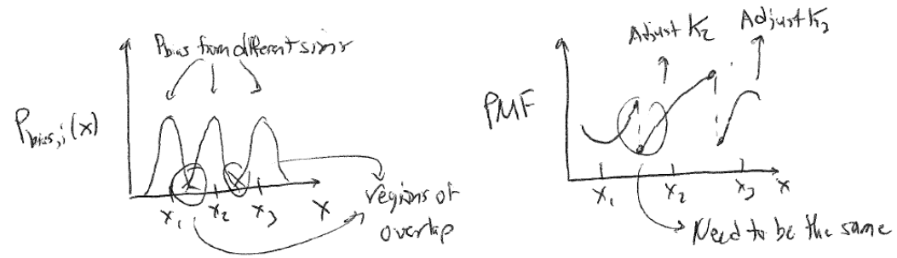

Free energy perturbation#
Recommended textbooks#
Frenkel and Smit Ch. 7
Topics in this lecture#
Umbrella sampling
Free energy perturbation
Thermodynamic integration
Umbrella sampling#
In the last lecture, we introduced the concept of the potential of mean force, or the change in the Helmholtz free energy of the system as a function of a reaction coordinate, \(x(\mathbf{r}^N)\), that describes a process of interest. The value of the PMF for some specific value of the reaction coordinate, \(x'\), is defined as:
Here, \(Z\) is the partition function of the entire system, which is unknown, while \(p(x')\) is the unbiased probability that the system obtains a configuration for which the reaction coordinate has a value \(x'\). We can write this probability distribution as:
The PMF is a very useful quantity for calculating equilibrium free energy changes associated with processes that involve a well-defined reaction coordinate. To calculate the PMF, however, the probability associated with a specific value of the reaction coordinate, \(p(x')\), must be determined, which might be challenging for a system where certain values of the reaction coordinate are observed with very low probability. As a result, we began to describe an approach called umbrella sampling, in which we apply some bias to the system potential energy function that enforces sampling of particular values of \(x\). Then, we can relate the corresponding biased probability distribution to the unbiased probability distribution to compute the PMF. We specifically defined a weight function \(w_i(x) \equiv w_i[x(\textbf{r}^N)]\) as the weight function that restrains the system near some value of the reaction coordinate \(x_i\). Typically, this is defined as a harmonic potential of the form:
The potential energy function of the system is then given by \(E(\mathbf{r}^N) + w_i(x)\), such that the weight function significantly increases the energy of any configurations with values of the reaction coordinate that differ significantly from the restrained value \(x_i\). In other words, we add a fictitious force (a spring force) that is not meant to model a physical force in the system, but rather is added solely to force the system to sample a particular value of the reaction coordinate. Conceptually, the idea behind this is to effectively “flatten” the free energy landscape by forcing the system to explore a local region near \(x_i\), thus allowing the sampling of values of \(x_i\) that would not be explored in an unbiased simulation.
{width=”100%”}
We can now write the biased probability of finding the system at a particular value of the reaction coordinate \(x(\mathbf{r}^N) = x'\) for the \(i\)th simulation using the modified potential energy function:
The delta function selects only values of \(x(\mathbf{r}^N) = x'\), so if \(x' \approx x_i\), then \(p_{\textrm{bias},i}(x')\) will be large; otherwise, the weight function will lead to large values of the total energy and thus negligible values of \(p_{\textrm{bias},i}(x')\). We can sample this probability distribution directly in a simulation by adding the weight function to the system dynamics (i.e., adding a spring force to relevant particles) to increase sampling of the value \(x'=x_i\). However, we need to sample the unbiased probability to calculate the potential of mean force, so we need to relate \(p_{\textrm{bias},i}(x')\) to \(p(x')\). To do so, we can first rewrite the biased probability distribution as:
By inspecting the second term we see that it is an integral over all phase space of \(e^{-\beta w_i(x)}\) multiplied by a Boltzmann weight; this is exactly the expression for the ensemble average \(\langle e^{-\beta w_i(x)} \rangle\), so we simplify to:
Next, we can recognize that the delta function in the integral selects only those states for which \(x(\mathbf{r}^N) = x'\) (unlike the previous ensemble average, where the integral includes all values of \(\mathbf{r}^N\) and thus all values of \(x(\mathbf{r}^N)\)). As a result, the value of the weight function can be computed analytically and removed from the integral, yielding:
Note that we are being careful to distinguish between the value of the weight function for a specific value of the reaction coordinate, \(e^{-\beta w_i(x')}\), which is analytically defined, and the ensemble-average value of the weight function for all possible values of the reaction coordinate, \(\langle e^{-\beta w_i(x)} \rangle\), which will depend on the entire phase space. We can then rearrange this expression for the unbiased probability to write:
This expression thus relates the biased probability distribution from the \(i\)th biased simulation to the unbiased probability distribution. We can then write the value of the PMF, \(F_i(x')\) associated with \(x'\) based on the \(i\)th simulation (i.e., the simulation with a bias applied to \(x_i\)) as:
Let’s consider each of these terms in turn. The first term, \(-k_BT \ln \left [p_{\textrm{bias}, i}(x') \right ]\), can be estimated directly from the \(i\)th biased molecular simulation for which the weight function will restrain the simulation to sample configurations with \(x(\mathbf{r}^N) \approx x_i'\), allowing \(p_{\textrm{bias}, i}(x')\) to be calculated even if \(x'\) is normally not sampled in an unbiased simulation. The second term, \(w_i(x')\), is calculated analytically since the expression for the weight function is specified. The fourth term, \(-k_BT \ln Z\), is a constant that does not depend on \(x'\) and can be eliminated by only consider differences in the PMF. Finally, the third term, \(- k_BT \ln \langle \exp \left [ -\beta w_i(x) \right ] \rangle\) is the ensemble average of the exponential weight function for \(x'\) sampled from the unbiased ensemble. As we will show below, this term is equal to the free energy cost associated with introducing the weight function. We can define this term as \(K_i\) to write our final expression as:
This final expression is a powerful approach for computing values of the PMF as follows. We first define a set of harmonic weight functions, each centered on some value \(x_i\) such that the total set of restrained values spans the values of \(x\) that are of interest. An independent simulation is then performed for each value of \(x_i\) and \(p_{\textrm{bias}, i}(x')\) is estimated for all \(x'\) (typically by histogramming). The unbiased PMF for \(x'\) is then computed from the \(i\)th simulation using the expression above. By only considering differences in the PMF, the \(- k_BT \ln Z\) term drops out, leaving only the set of \(K_i\) to be determined for the entire PMF to be specified. However, we can compute the set of \(K_i\) by recognizing that the value of the unbiased PMF, \(F_i(x')\), should be independent of the value of \(x_i\) that is biased. Thus, we can compute \(F_i(x')\) for the same \(x'\) from several different biased simulations (i.e. different biased values of \(x_i\)) and adjust the values of \(K_i\) such that the estimate for \(F(x')\) matches across all biased windows. This approach requires that the biased simulations overlap - that is, that there is a non-negligible value of \(p_{\textrm{bias}, i}(x')\) for the same value of \(x'\) sampled in each of the overlapping windows. In practice, this means that the harmonic weight function must allow the system to sample configurations slightly different from \(x_i\) to ensure that \(x'\) can be sampled in multiple different biased simulations.
{width=”100%”}
So, to recap: umbrella sampling allows us to calculate the PMF (i.e. the change in the free energy) associated with any arbitrary process by sampling configurations associated with different values of a reaction coordinate associated with the process. The key advantage of the umbrella sampling approach is that any value of the reaction coordiante can be sampled by applying weight functions, thus enabling the estimate of the PMF even for very low probability (high free energy) states. From a computational standpoint, this method requires a series of independent simulations to be performed and then free energies to be determined by matching estimates of the PMF from overlapping biased simulations. The requirement of overlap renders this technique inefficient computationally, although more efficient methods (such as the Weighted Histogram Analysis Method) have been developed to compute the set of \(K_i\). These techniques are outside the scope of this discussion. Umbrella sampling is very commonly used to compute PMFs for processes with large energy barriers, such that the processes cannot be directly observed in unbiased simulations. For example, one could apply umbrella sampling to calculate the free energy change associated with adsorbing a molecule to a surface by defining the distance to the surface as the reaction coordinate, choosing multiple values of this distance, then performing multiple independent simulations in which the molecule of interest is restrained to each value of the reaction coordinate using a harmonic spring.
Free energy perturbation#
So far, we have defined the potential of mean force as the change in the free energy of a system during a process in which particle coordinates follow some predefined reaction coordinate, and hence the overall system potential energy function is unchanged. Computing the potential of mean force associated with different regions of phase space is useful for calculating the magnitude of energy barriers and identifying local minima. However, we might also ask how to calculate the change in free energy between two systems with different potential energy functions entirely. Finding an algorithm to accomplish this would also be useful in applications other than calculating a PMF along a reaction coordinate, such as calculating the free energy change associated with mutating the chemical identities of molecules in a simulation. We can compute the free energy difference between two systems with different partition functions using a technique called free energy perturbation.
For this calculation, we will first define two partition functions, \(Z_0\) and \(Z_1\), corresponding to two different systems with potential energy functions \(E_0(\mathbf{r}^N)\) and \(E_1(\mathbf{r}^N)\). Note that while the potential energy functions are different, we assume that the set of possible values of \(\mathbf{r}^N\) are the same (i.e., both systems access the same phase space). For example, one could imagine computing the free energy difference between an ideal gas and a non-ideal gas with the same number of particles, with the interactions associated with the non-ideal gas leading to a different potential energy function. The Helmholtz free energy change for transforming from system 0 to 1 is then:
Next, we define \(p_1(\Delta E')\) as the probability distribution for the energy difference \(\Delta E(\textbf{r}^N) = E_1(\mathbf{r}^N) - E_0(\mathbf{r}^N)\) with configurations sampled using \(E_1\). In other words, we can imagine generating a large number of configurations using the potential energy function for system 1, calculating the energy of those configurations according to both \(E_1\) and \(E_0\), then finding the probability of identifying a particular energy difference \(\Delta E'\). Similarly, \(p_0(\Delta E')\) is the probability density for the same energy difference with configurations sampled using \(E_0\). We then write:
Here, \(\Delta E'\) is a fixed value that is not a function of \(\mathbf{r}^N\) and the delta function eliminates all other possible values of \(\Delta E(\textbf{r}^N)\), so in the second line we can define \(E_1(\textbf{r}^N) = E_0(\textbf{r}^N) + \Delta E'\) and in the third line \(\exp \left [ -\beta \Delta E' \right ]\) can be removed from the integral. We can now multiply the numerator and demoninator by \(Z_0\) to obtain:
We can take the log of both sides to estimate the free energy difference using \(\Delta F = -kT \ln Z_1/Z_0\):
From this equation alone we can see that calculating the two probability densities from simulations in both ensembles would allow for the calculation of the free energy change \(\Delta F\). Finally, we can integrate both sides over all possible values of \(\Delta E'\) to yield a more concise expression:
Here, we integrate the probability distribution for \(\Delta E'\) over all possible energy differences sampled in system 1; since the probability distributions is normalized, this just equals 1. The value \(\Delta F\) is independent of \(\Delta E'\) so it can be removed from the integral on the right hand side, which then is equal to the ensemble average value of the exponential of \(\Delta E'\), yielding the final expression. Note again that this ensemble average is sampled using the energy function of system 0.
The final free energy perturbation expression relates the free energy change for transforming from system 0 to system 1 to the ensemble average of the energy change for this transformation for configurations sampled from \(Z_0\). Free energy perturbation can be used directly in molecular simulations by defining system 0 and 1, generating configurations according to the potential energy function of system 0, calculating the energy of the same configuration calculated using both \(E_1\) and \(E_0\), then averaging \(E_1 - E_0\) to get \(\Delta F\) according to eq. [app_a_fep_eq]{reference-type=”eqref” reference=”app_a_fep_eq”}. Note that there are no constraints on what the potential energy functions of system \(0\) and \(1\) can be, so it is possible to use this approach to completely change the chemical identify of molecules during a simulation and measure the corresponding free energy change. Such transformations are called alchemical free energy calculations.
Alchemical free energy calculations are often used to compute the free energy difference between two states that have no clear reaction coordinate connecting them, and for which only differences in energy (and not complete free energy pathways) are necessary. A typical example is in the design of drug inhibitors to bind proteins - free energy perturbation can be used to calculate the free energy change between a molecule bound to a receptor and a slightly different molecule bound to the same receptor to quantify relative binding affinities. Alternatively, the same technique could be used to calculate the absolute free energy of binding by defining a difference in free energy between the bound drug molecule and a drug molecule free in solution.
 {width=”100%”}
{width=”100%”}